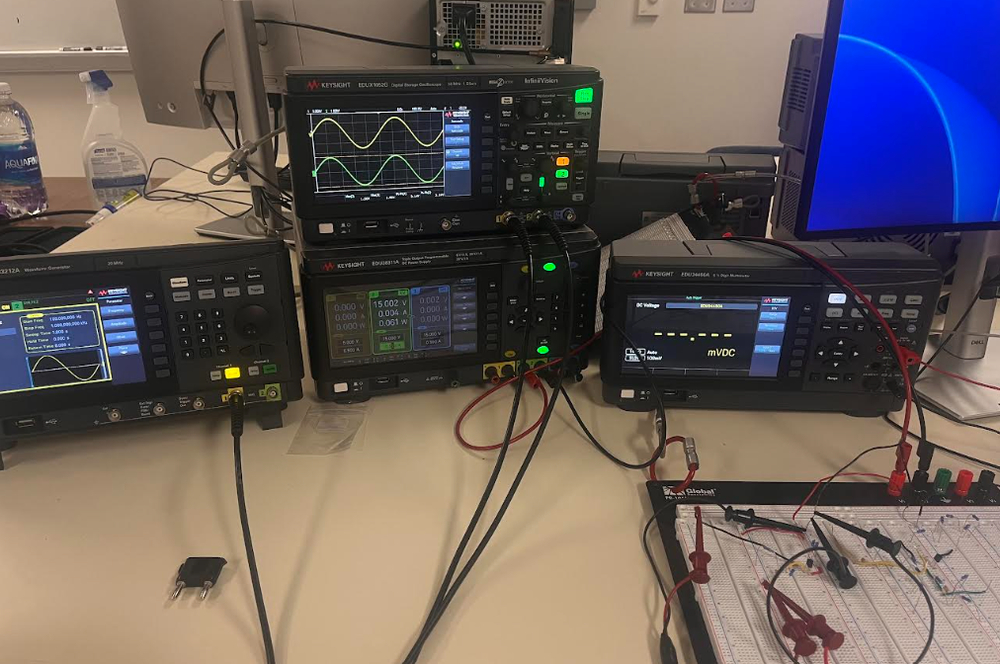

Analog & Digital Electronics | Linear & Nonlinear Circuit Analysis | Fall 2026

A series of experimental studies investigating the behavior of electronic circuits through mathematical analysis, LTspice simulations, hardware implementation, and laboratory measurements.
The experiments explore signal amplification, waveform shaping, semiconductor characteristics, voltage regulation, and digital logic. The emphasis is on understanding the relationship between theoretical models and practical circuit behavior, including performance limitations and sources of experimental discrepancy.
Individual technical reports documenting circuit design, theoretical calculations, simulations, experimental measurements, and analysis.